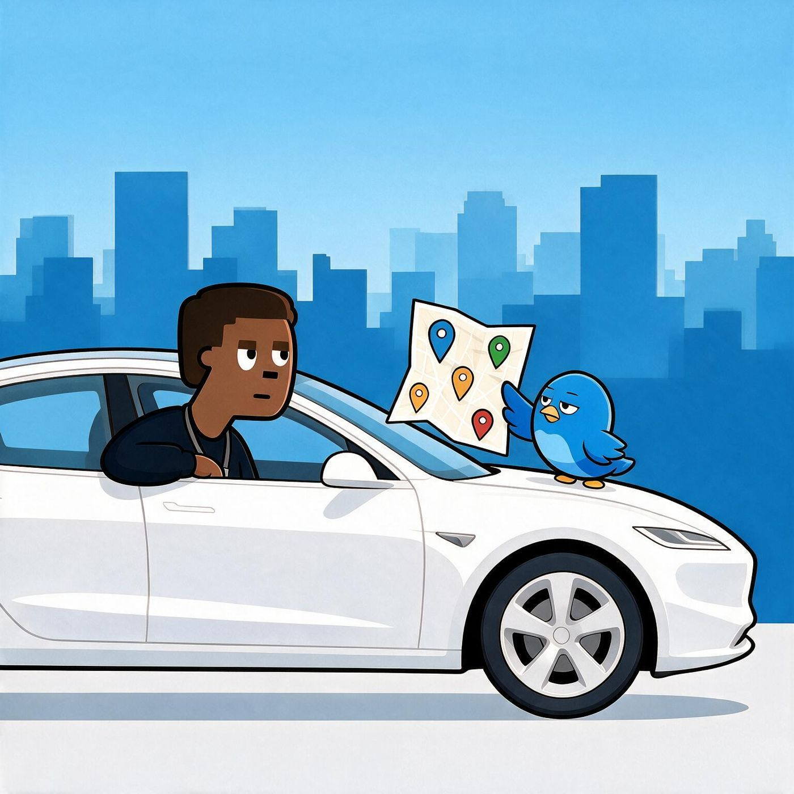

Official Ferro accounts
Follow us.
Follow Ferro on Instagram, TikTok, Facebook and more.

- Instagram@ferromapsVerified on InstagramFollow (opens in new tab)
- TikTok@ferro.mapsFollow (opens in new tab)
- FacebookFerro MapsFollow (opens in new tab)
= an official Ferro account. Only follow these.